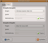
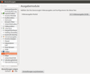

Videotreiber ändern
Archivierte Anleitung
Dieser Artikel wurde archiviert, da er - oder Teile daraus - nur noch unter einer älteren Ubuntu-Version nutzbar ist. Diese Anleitung wird vom Wiki-Team weder auf Richtigkeit überprüft noch anderweitig gepflegt. Zusätzlich wurde der Artikel für weitere Änderungen gesperrt.
Anmerkung: Relevante Informationen wurden in den Artikel Video-Dekodierung beschleunigen übertragen.
Zum Verständnis dieses Artikels sind folgende Seiten hilfreich:
Ein Terminal öffnen, optional
In einigen Fällen funktioniert die Wiedergabe von Videos nicht richtig. Eine Möglichkeit zur Fehlerbehebung stellt ein Wechsel des Videotreibers dar.
Zur Theorie: die Videotreiber stellen eine Schnittstelle zur Grafikkarte dar. Sie nutzen entweder Optimierungen, welche die speziellen Grafikchips zur Verfügung stellen, oder verwenden unterschiedliche Arten der Kommunikation mit der Grafikkarte. Bei Videos wird in der Regel direkt in den Speicher der Grafikkarte geschrieben, ohne den Grafikprozessor zu belasten. Allerdings muss die Grafikkarte von dieser Aktion unterrichtet werden – und sie muss es erlauben. Unterschiedliche Videotreiber nutzen unterschiedliche Methoden, um die Grafikkarte zur Mitarbeit zu bewegen. Man sollte also denjenigen Videotreiber verwenden, der eine kompatible Art der Kommunikation mit der Grafikkarte besitzt und zudem den geringsten Ressourcen-Verbrauch verursacht, um den Rechner nicht unnötig auszubremsen.
Zumeist funktioniert alles zufriedenstellend mit dem Treiber "xv". Unterstützt die Karte OpenGL, so kann man einen OpenGL-Treiber ausprobieren. Gute Ergebnisse erzielt man auch mit spezifisch für die Grafikkarte entwickelten Treibern. Als Alternative kann man auch den XServer mit dem Treiber "xshm" einbinden. Eventuell sind auch Änderungen in der Datei xorg.conf des XServers nötig. Den besten Treiber ermittelt man am einfachsten durch Ausprobieren.
HD¶
Das Darstellen von HD-Videos erfordert einiges an Rechenleistung. Am besten ist es, wenn die Grafikkarte das Verarbeiten der Daten übernimmt und den Prozessor des Rechners dadurch entlastet. Die Hersteller der Grafikchips haben hierfür verschiedenen Unterstützungen implementiert:
bei Nvidia-Chips über den Videotreiber
vdpau(funktioniert unter Ubuntu problemlos)bei ATI-Chips ist es der Videotreiber UVD (funktioniert nur nach einigen Vorarbeiten
 )
)
Die genannten Techniken sind relativ neu, deshalb unterstützen nur neuere Chips die genannten Treiber.
Player¶
Um den Videotreiber der unterschiedlichen Programme [1] zu ändern, geht man wie folgt vor:
Xine¶
Grafische Methode¶
Mit einem Rechtsklick in das Xine-Fenster erscheint ein Kontext-Menü. Dort wählt man "Einstellungen". Unter dem Karteireiter "Gui" stellt man den Schalter "Erfahrenheit einstellen" auf den Wert "Advanced". Dies bestätigt man mit "Anwenden". Nun steht unter dem Karteireiter "Video" der Schalter "Zu benutzender Videotreiber" zur Verfügung. Dort kann man nun den gewünschten Videotreiber auswählen und mit "Anwenden" bestätigen. Damit die Änderung wirksam wird, muss Xine beendet und neu gestartet werden.
Textbasierte Methode¶
Eine Liste der verfügbaren Treiber erhält man mit diesem Befehl [2]:
xine --help
Als Ausgabe erhält man so etwas wie dieses:
-V, --video-driver <drv> Auswahl des Video Treiber nach id. Verfügbar:
dxr3 aadxr3 xv opengl xshm aa caca xxmc none sdl vidix vidixfb fb xvmcUm schnell verschiedene Treiber auszuprobieren, startet man Xine mit der passenden Option. Dies ist bei xine die Option "-V". Will man zum Beispiel den Videotreiber "xshm" ausprobieren, so startet man Xine mit diesem Befehl:
xine -V xshm irgendeinfilm.avi
Hat man einen funktionierenden Treiber ermittelt, so macht man diesen permanent wirksam: in der Datei ~/.xine/config findet man den Eintrag "video.driver". Der gewünschte Videotreiber wird - getrennt durch einen Doppelpunkt - einfach direkt an diesen Eintrag angehängt. Beispiel:
video.driver:xv
Ein eventuell am Anfang dieser Zeile stehendes # muss entfernt werden.
MPlayer¶
Grafische Methode¶
Mit einem Rechtsklick in das Video-Fenster von MPlayer erscheint ein Kontext-Menü. Dort wählt man "Preferences". Unter dem Karteireiter "Video" kann man direkt den Videotreiber auswählen. Damit die Änderung wirksam wird, muss MPlayer beendet und neu gestartet werden.
Textbasierte Methode¶
Eine Liste der verfügbaren Treiber erhält man mit diesem Befehl [2]:
mplayer -vo help
Als Ausgabe erhält man so etwas wie dieses (gekürzt!):
Available video output drivers:
xmga Matrox G200/G4x0/G550 overlay in X11 window (using /dev/mga_vid)
mga Matrox G200/G4x0/G550 overlay (/dev/mga_vid)
tdfxfb 3Dfx Banshee/Voodoo3/Voodoo5
3dfx 3dfx (/dev/3dfx)
xvmc XVideo Motion Compensation
xv X11/Xv
x11 X11 ( XImage/Shm )Um schnell verschiedene Treiber auszuprobieren, startet man MPlayer mit der passenden Option. Dies ist bei MPlayer die Option "-vo". Will man zum Beispiel den Videotreiber "xshm" ausprobieren, so startet man MPlayer mit diesem Befehl:
mplayer -vo xshm irgendeinfilm.avi
Hat man einen funktionierenden Treiber ermittelt, so macht man diesen permanent wirksam: in der Datei ~/.mplayer/config trägt man den gewünschten Treiber mit folgender Syntax ein (als Beispiel wurde der Videotreiber "xshm" gewählt):
vo = xshm
Falls die Datei nicht vorhanden ist, so muss man sie anlegen.
|  |
| Totem |
Player mit gStreamer (z.B. Totem)¶
gStreamer basierte Programme wie Totem übernehmen die Einstellungen des Multimediasystems. Der Einstellungsdialog wird über den Befehl gstreamer-properties aufgerufen [1]. Im Reiter "Video" kann unter "Vorgabe Ausgabe" ein Plugin gewählt werden.
VLC¶
|  |
| VLC |
Über den Menüpunkt "Extras -> Einstellungen" oder Strg + P gelangt man zum Einstellungs-Fenster, über den Button „Video“ zu den „Videoeinstellungen“. Die „Einstellungen zeigen“ auf „Alle“ stellen und zum Abschnitt "Video -> Ausgabemodule" wechseln. Nun kann das Ausgabemodul gewählt werden.
- Erstellt mit Inyoka
-
 2004 – 2017 ubuntuusers.de • Einige Rechte vorbehalten
2004 – 2017 ubuntuusers.de • Einige Rechte vorbehalten
Lizenz • Kontakt • Datenschutz • Impressum • Serverstatus -
Serverhousing gespendet von